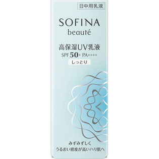

返回列表
产品名称：ソフィーナボーテ 高保湿UV乳液 SPF50+PA++++ しっとり

花王 ソフィーナボーテ 高保湿UV乳液 SPF50+PA++++ しっとり ３０Ｇ
メーカー 花王
JANコード 4901301325327
商品の特徴
朝のみ使用で約３ヶ月分
- 成分・分量
- 水、酸化亜鉛、ジメチコン、BG、メトキシケイヒ酸エチルヘキシル、イソノナン酸イソトリデシル、エタノール、ジエチルアミノヒドロキシベンゾイル安息香酸ヘキシル、セチルPGヒドロキシエチルパルミタミド、アスナロ枝エキス、ローズマリー葉エキス、チューベロース多糖体、ショウガ根エキス、ユーカリ葉エキス、グリセリン、イソステアリン酸コレステリル、スクワラン、コレステロール（羊毛）、メチコン、ポリシリコーン-9、ステアロキシPGヒドロキシエチルセルローススルホン酸Na、ステアリン酸ソルビタン、トコフェロール、BHT、香料
- 用法及び用量
- ＜使用方法＞
適量（直径1．3cmの円に広がるくらい）を顔全体になじませます。